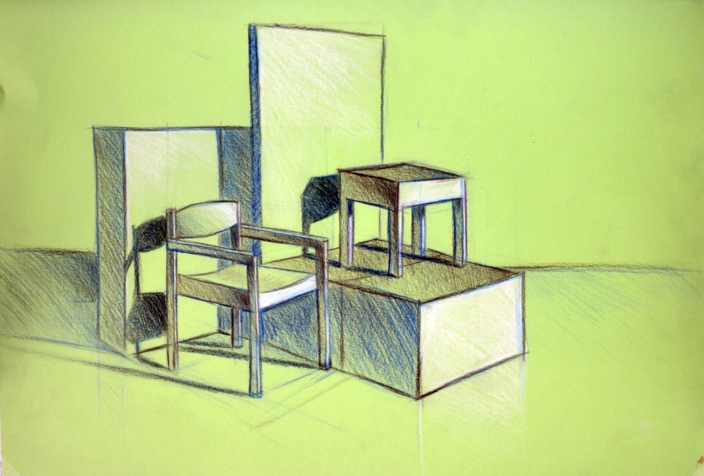
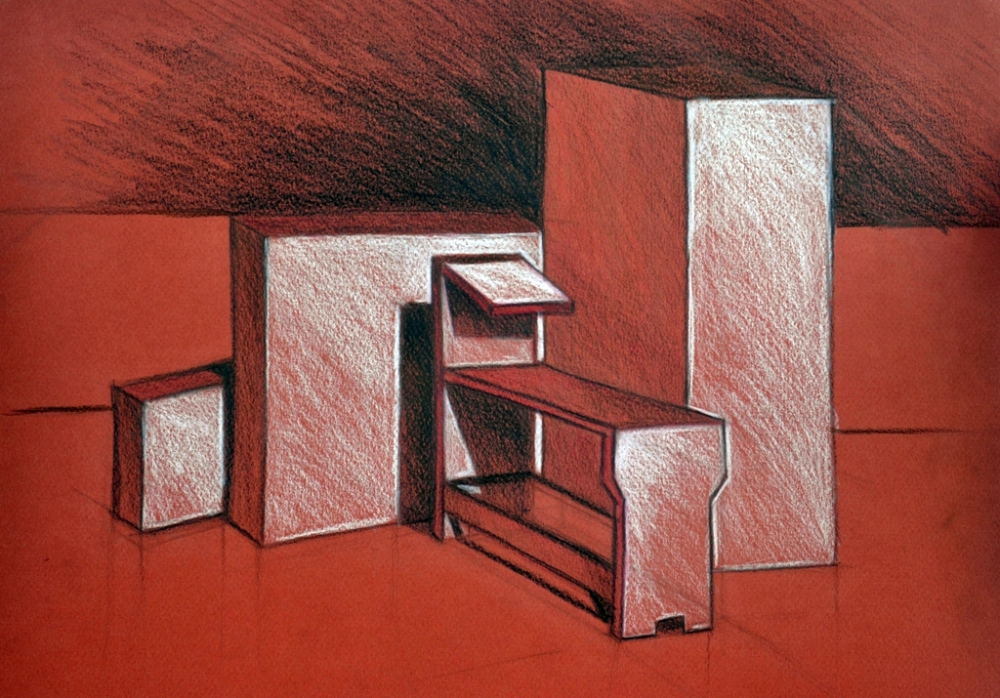
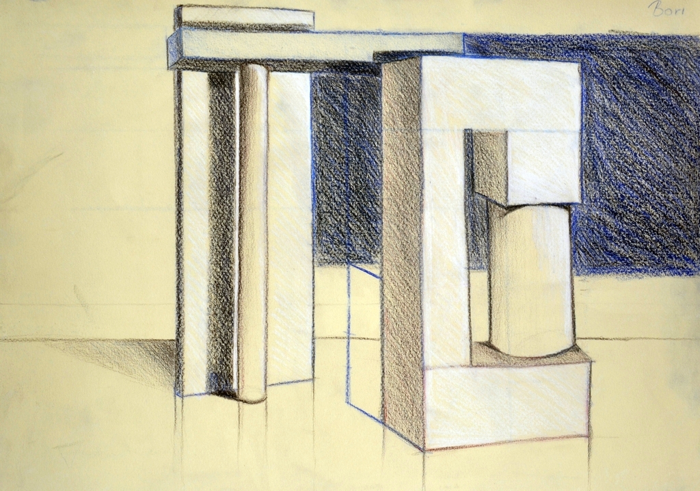
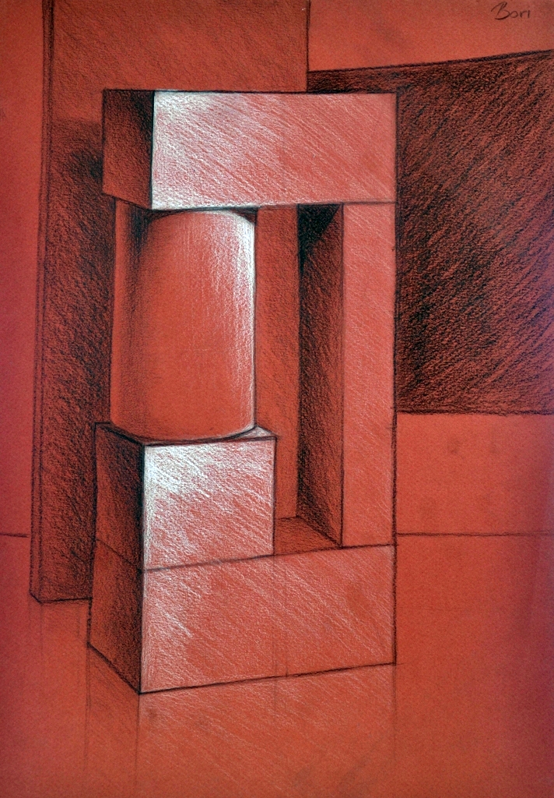

4.képcsoport
Ezek a képek az egyetemi szabadkézi rajz órákon születtek. Jól látható, hogy a fekete-fehér ábrázolást követően itt már a színek használata is hangsúlyt kapott. Színes rajzlapokra dolgoztunk színes ceruzákkal.
Ezeken a gyakorlatokon keresztül megtanultuk a színkeverést, a színek egymásra építését és a hideg-meleg színekkel való játékot.
Ezeken a rajzokon már látható a fejlődés is. Pontosabb, részletezőbb a rajzok kidolgozása, a vonalak egyenesebbek, és finomodtak az árnyékok is.
|  |  |  |  |